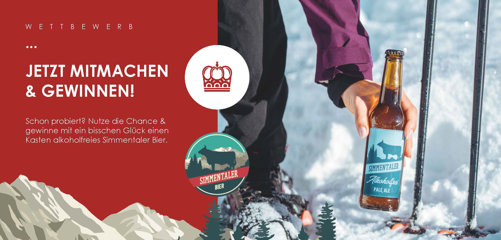

Kampagne · Social Media · Print · 2024
Mitmachen
& gewinnen!
Anfang 2024 entstand für die Krone Thun ein Wettbewerb mit
Simmentaler Bier. Gäste im Restaurant erhielten jeweils einen
Talon zum Ausfüllen und nahmen damit an der Verlosung eines
Kastens Bier teil.
Dafür durfte ich einen Wettbewerbstalon gestalten, der die beiden
Corporate Designs miteinander verbindet. Zusätzlich wurde der
Wettbewerb über Instagram und Facebook kommuniziert und die
Gewinner anschliessend persönlich benachrichtigt.

Ergebnis